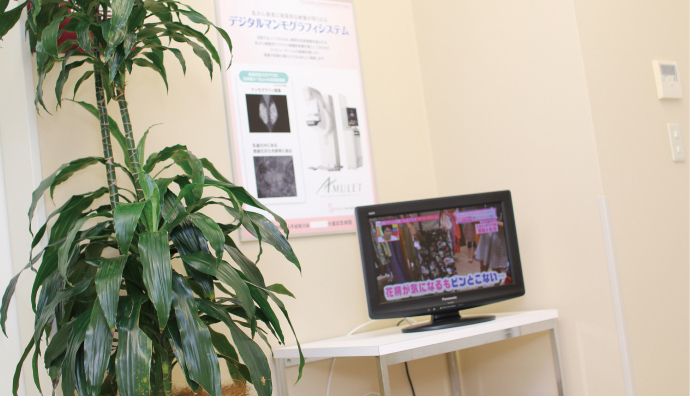

乳がん検診
乳がん検診について
生活習慣の欧米化により乳がんを発症する方が急増しています。しかし乳がんは、がんの中でただ一つ「自分で発見できるがん」でもあり、早期治療なら90％以上が完治します。ぜひ乳がん検診を受けましょう。
料金（税込）
妊娠の可能性のある方、授乳中の方、心臓ペースメーカー植込み後の方、豊胸術後の方は受けられません。
※健診結果は通常2～3週間後にご指定の場所へ郵送いたします。検査項目によっては、1ヶ月程お時間をいただく場合があります。
◎乳房超音波検査（乳腺エコー）／ 4,400円（税込）
超音波を用いて乳房内部の様子を観察する検査方法です。触診で触れないような小さな腫瘍を見つけたり、がんとの識別がむずかしい乳腺症やのう腫（水の袋）の診断にも威力を発揮します。尚、超音波ではとらえにくい疾患もありますので、マンモグラフィーとの併用をお勧めします。
◎乳房レントゲン検査
マンモグラフィー2D／ 6,600円（税込）
乳房専用のＸ線撮影機で乳房をはさんで撮影します。小さながんの検出だけでなく、超音波ではとらえにくい乳管内進型（乳管の中で大きくなる）のがんの検出にも有効です。但し、マンモグラフィーに写りにくいタイプのがんもありますので、超音波との併用をお勧めします。
トモシンセシス（3Dマンモグラフィー）（税込）
多方向から撮影し、デジタル処理で断層像をつくる最新の検査方法です。通常撮影では乳腺構造の重なりのために発見が難しかった病変が確認できます。
◎北九州市乳がん検診（マンモグラフィー）／ 1,000円（税込）
北九州市在住・40歳以上の方になります。（隔年受診）北九州市乳がん検診無料クーポン券をお持ちの方はご予約の際必ずお申出下さい。また、受診当日はクーポン券をお忘れにならないようお願いします。
医療機器の紹介
マンモグラフィー

待合室
留意事項
- ・検査当日の服装について、マンモグラフィー検査を受ける際、上半身は専用の検査着に着替えるため、ワンピース等は避け、上下分かれている洋服を着用ください。
- ・マンモグラフィー撮影の範囲は乳房からわきの下を含めた部分になりますので、撮影の際は制汗剤やパウダー等の使用は避けてください。
パウダー等が付いたまま撮影されると、がんのサインに非常によく似て写ることがあります。 - ・髪の毛の長い方は検査時に髪を結んでいただきます。髪結いの準備をお願いします。
- ・月経のある方は、乳腺の変化がない月経終了後10日以内をおすすめします。マンモグラフィーで伴う疼痛や、視触診で伴う違和感を最小限にとどめることができます。